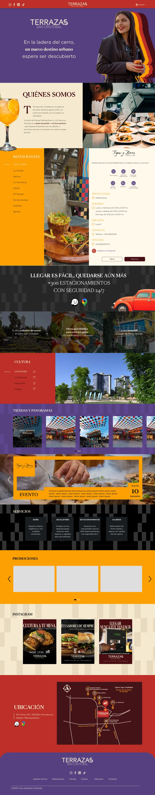
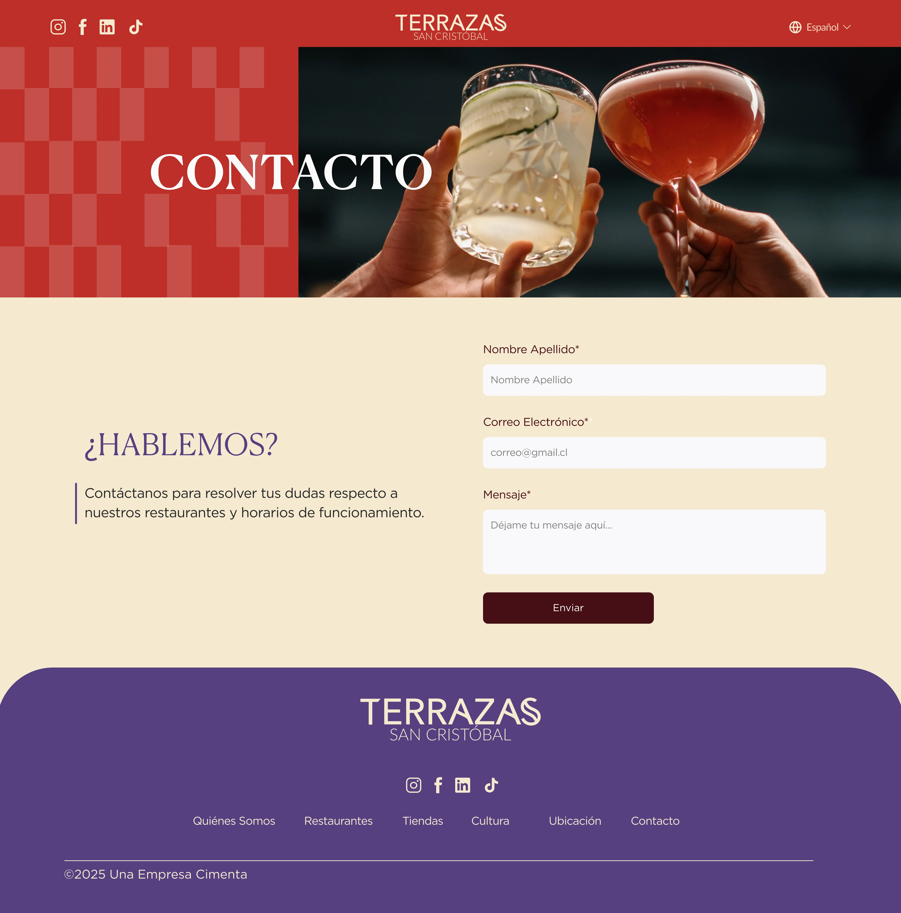
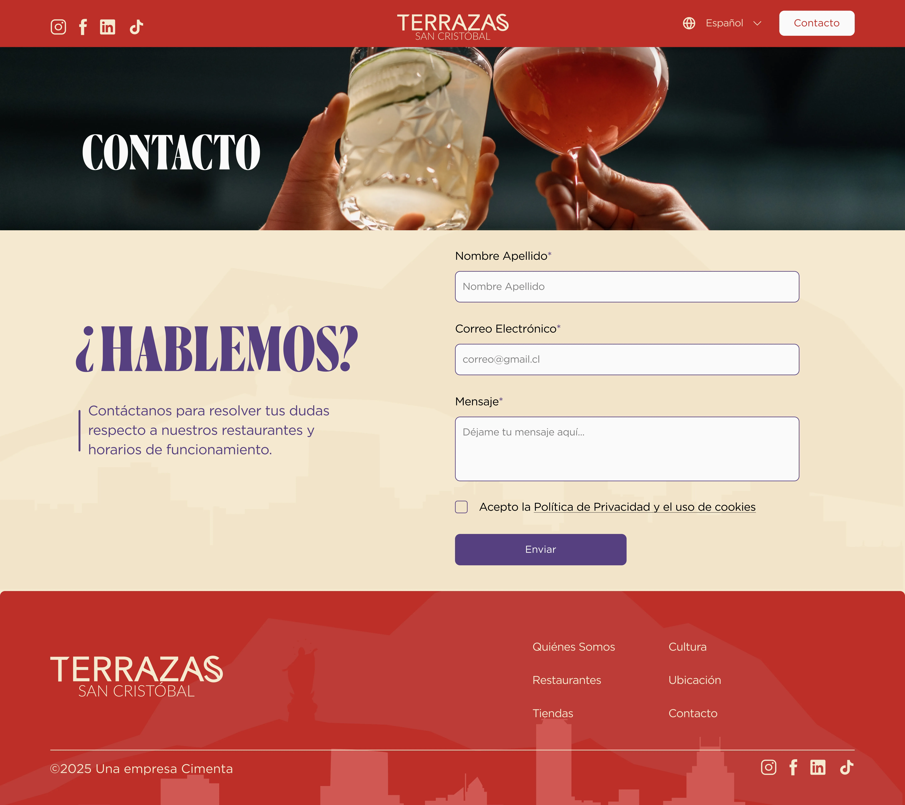
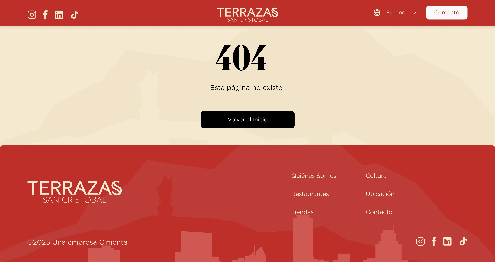
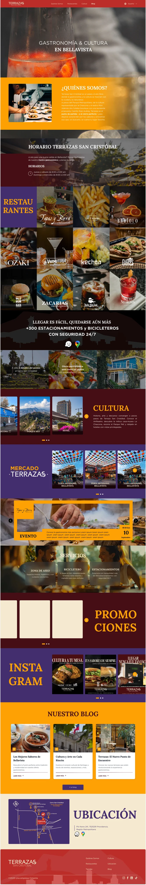
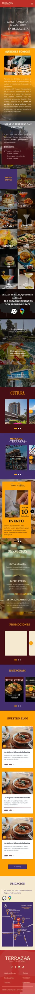
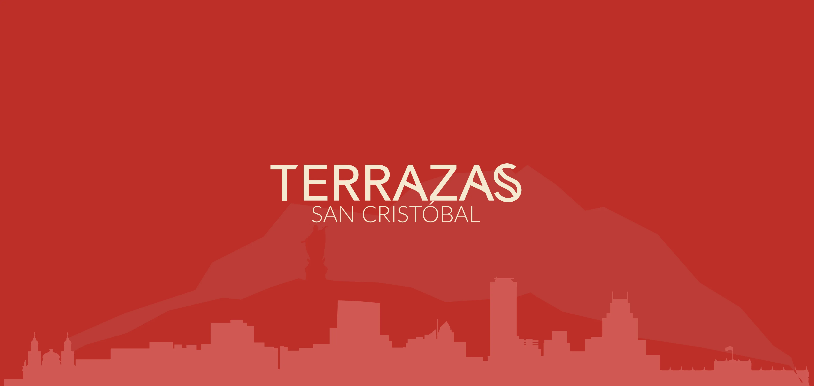

Contexto
Descripción del encargo
El proyecto consistió en el diseño de una landing page para Terrazas San Cristóbal, centro gastronómico y cultural ubicado en Bellavista, Santiago. El objetivo fue crear una presencia digital que comunicara la propuesta del lugar: sus restaurantes, horarios, ubicación y ambiente. El desafío visual era traducir el carácter maximalista de la marca — vibrante, nocturno, propio del barrio Bellavista — en un sistema de diseño web coherente y funcional.
Definición
El proyecto contempló dos propuestas de diseño. La primera fue desarrollada y aprobada en su totalidad; sin embargo, un cambio en el manual de marca del cliente abrió la oportunidad de explorar una segunda dirección visual. Ambas propuestas comparten la misma arquitectura de información y estructura de navegación — lo que cambió fue el sistema visual: paleta, tipografía y lenguaje gráfico.
Propuesta 1
La primera versión se desarrolló bajo el manual de marca original, con una paleta extendida de rojo, naranjo, amarillo y morado aplicada en bloques de color sólido por sección. Cada área del sitio tenía su propio identificador de color, generando un recorrido visual que acompañaba el scroll y reforzaba la diversidad de propuestas del centro.

Home completo — Propuesta 1. Bloques de color por sección.
Cambio de marca
Con la actualización del manual, la paleta se redujo a vinotinto, terracota y morado oscuro sobre crema. La tipografía pasó de condensada-geométrica a serif, y se incorporó una textura de skyline ilustrado como fondo — reforzando la atmósfera nocturna y sofisticada que busca la marca. La estructura de secciones se mantuvo intacta; solo se rediseñó la capa visual completa.

Contacto — Propuesta 1

Contacto — versión final
Solución Final
Se mantuvo la estructura funcional ya validada —selector de restaurante, fichas con horario y ubicación, mapa con accesos— pero rediseñada sobre el nuevo sistema visual. También se diseñó la página 404, manteniendo coherencia incluso en los estados de excepción.

Página 404. Coherente con el resto del sitio.

Home — desktop

Home — mobile
Mantención y Evolución
Tras el lanzamiento, el proyecto continuó con una etapa de mantención y mejoras. La ficha de cada restaurante, que originalmente se mostraba en un pop-up, se migró a una landing individual por restaurante — mejorando la experiencia de lectura y abriendo la posibilidad de ampliar el contenido por local. Se incorporó además una galería de fotos propia para cada restaurante, permitiéndoles mostrar su ambiente e identidad visual de forma autónoma. Finalmente, se diseñó una sección de blog con filtros por categoría, con el objetivo de generar contenido indexable y posicionar el sitio en buscadores — evolucionando desde una landing estática hacia una web con estructura de contenidos y estrategia SEO.

Landing individual — restaurante

Blog — filtros por categoría
Producto Implementado
Terrazas San Cristóbal en Vivo
Explora la solución final implementada en el entorno de producción del cliente.
Ver sitio en vivo ↗